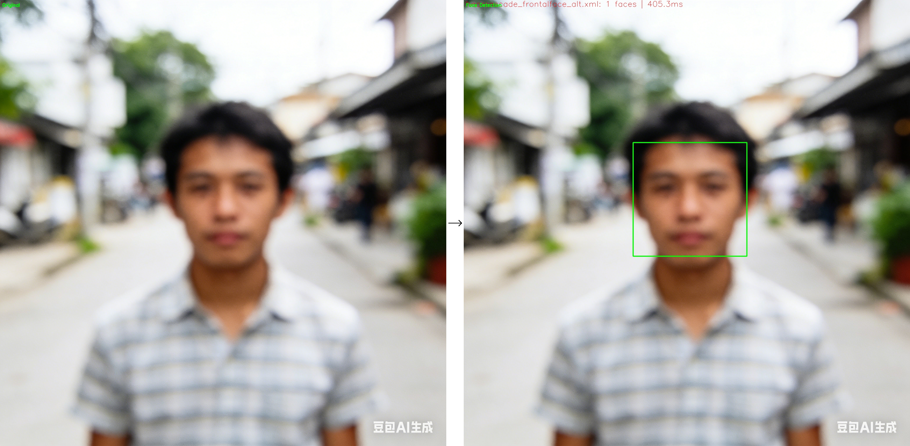

Face Detection Project Documentation
Introduction
This project implements a face detection system using OpenCV's cascade classifiers. It provides a complete pipeline for detecting faces in images and real-time video streams, with configurable detection parameters and logging support.
Main Features
Supports both Haar and LBP cascade classifiers
Real-time camera support – detects faces from webcam input
Configurable parameters – adjustable scale factor, minimum neighbors, and detection size
Model management – automatically scans and loads XML model files
Logging system – built-in logger with developer mode for debugging
Image utilities – loading, preprocessing, and result visualization
Built-in C++20 module support
Conan-based dependency management
Cross-platform build support (Windows/Linux/macOS)
Mixed C and C++ programming support
Quick Start
# Install dependencies
conan install .
# Build the project
conan build .
# Create the package
conan create .
Applying results
The following illustration shows face detection results:
{kind=link}
Figure 1 Face detection example 1
{kind=link}

Figure 2 Face detection example 2
{kind=link}
Figure 3 Face detection example 3
With this face detection algorithm, you can extract face regions from pictures for downstream applications.
Usage Example
#include "facedetector.hpp"
#include "cfg.hpp"
int main() {
// Load configuration
FaceDetectConfig config;
config.loadModel("./models");
// Create detector
auto detectors = FaceDetector::loadFromConfig(config);
FaceDetector* detector = detectors[0];
// Detect faces
cv::Mat image = cv::imread("test.jpg");
DetectionResult result = detector->detect(image);
// Draw and save results
ImageUtils::drawResults(image, result.faces,
result.modelName, result.timeMs);
cv::imwrite("result.jpg", image);
// Clean up
FaceDetector::cleanup(detectors);
return 0;
}
Usage demonstration
The face detection function processes an input image and returns detected face regions. It automatically loads the specified cascade model and applies detection with configurable parameters.
#include "facedetector.hpp"
#include "cfg.hpp"
int main() {
// Load configuration
FaceDetectConfig config;
config.loadModel("./models");
// Create detector
auto detectors = FaceDetector::loadFromConfig(config);
FaceDetector* detector = detectors[0];
// Detect faces
cv::Mat image = cv::imread("test.jpg");
DetectionResult result = detector->detect(image);
// Draw and save results
ImageUtils::drawResults(image, result.faces,
result.modelName, result.timeMs);
cv::imwrite("result.jpg", image);
// Clean up
FaceDetector::cleanup(detectors);
return 0;
}
Project Structure
face-detection/
├── include/ # Header files
│ ├── cfg.hpp
│ ├── detector.hpp
│ ├── facedetector.hpp
│ ├── imageutils.hpp
│ └── logger.hpp
├── src/ # Source files
│ ├── cfg.cpp
│ ├── facedetector.cpp
│ └── imageutils.cpp
├── test_package/ # Testing package
├── docs/ # Documentation
├── CMakeLists.txt # CMake build configuration
├── conanfile.py # Conan package configuration
├── metadata.json # Project metadata
└── LICENSE # License file
Theories or introduction
Face detection in cascade is implemented using a sliding window approach with multi-scale image pyramids.
The detector scans input images at various scales to locate facial regions, and returns bounding boxes around detected faces.
Key detection parameters such as scale factor, minimum neighbors, and minimum face size are configurable to balance sensitivity and accuracy.
The detection pipeline includes: - Multi-scale scanning to handle faces of different sizes - Adaptive thresholding to reduce false positives - Efficient region-of-interest processing
License
This project is licensed under the Apache-2.0 License. See the LICENSE file for details.